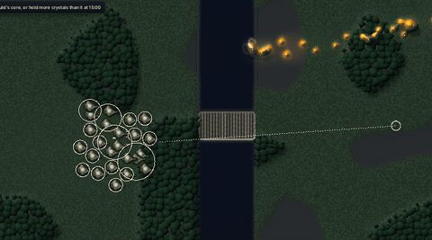
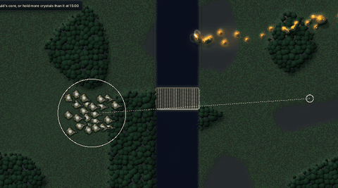
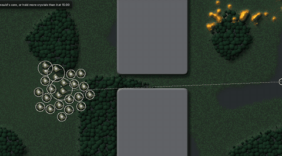
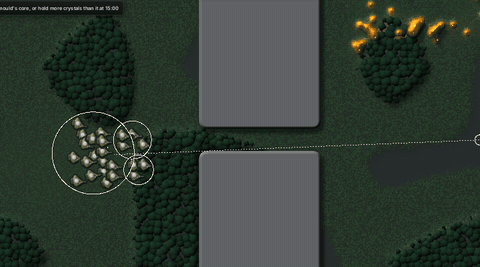
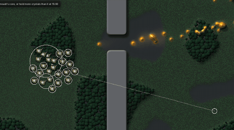

<title>Squads Through Gaps</title>
<meta name="claude:viewport-fit-sides" content="cover">
<link rel="stylesheet" href="https://fonts.googleapis.com/css2?family=Space+Grotesk:wght@500;700&family=Inter:wght@400;600&display=swap">
<style>
/* Layout: one column of before/after pairs, the measured knot beside each film */
:root{--bg:#f3f4ef;--panel:#ffffff;--fg:#1d231c;--muted:#5d6858;--accent:#2f7a45;--line:#d9ddd2;
--display:"Space Grotesk",system-ui,sans-serif;--body:Inter,system-ui,sans-serif}
@media (prefers-color-scheme:dark){:root:not([data-theme="light"]){--bg:#111611;--panel:#192019;--fg:#e6ebe2;--muted:#9aa694;--accent:#7fd197;--line:#2b352a;color-scheme:dark}}
:root[data-theme="dark"]{--bg:#111611;--panel:#192019;--fg:#e6ebe2;--muted:#9aa694;--accent:#7fd197;--line:#2b352a;color-scheme:dark}
body{background:var(--bg);color:var(--fg);font-family:var(--body);line-height:1.55;padding-left:max(16px,env(safe-area-inset-left,0px));padding-right:max(16px,env(safe-area-inset-right,0px));padding-block:28px 48px}
main{max-width:1020px;margin:0 auto;display:grid;gap:28px}
h1,h2{font-family:var(--display);text-wrap:balance;margin:0}
h1{font-size:2rem}h2{font-size:1.25rem}
p{margin:0;max-width:68ch}
.lede{display:grid;gap:10px}
.muted{color:var(--muted)}
section{display:grid;gap:12px;padding-block:18px;border-top:1px solid var(--line)}
.pair{display:grid;grid-template-columns:1fr 1fr;gap:14px}
@media (max-width:700px){.pair{grid-template-columns:1fr}}
figure{margin:0;display:grid;gap:6px;min-width:0}
figure img{width:100%;border-radius:6px;border:1px solid var(--line)}
figcaption{font-size:.9rem;color:var(--muted)}
figcaption b{color:var(--fg);font-variant-numeric:tabular-nums}
.tag{font-family:var(--display);font-size:.8rem;letter-spacing:.06em;text-transform:uppercase;color:var(--accent)}
.wrap{overflow-x:auto}
table{border-collapse:collapse;font-variant-numeric:tabular-nums;font-size:.9rem;min-width:520px}
th,td{padding:6px 10px;border-bottom:1px solid var(--line);text-align:right}
th:first-child,td:first-child{text-align:left}
</style>
<main>
<div class="lede">
<span class="tag">Larder world · squad mode · 2026-11-15</span>
<h1>Squads through narrow gaps</h1>
<p>A squad of 24 sent through a bridge or a door narrower than its blob used to pile into one knot: every formation place that fell in rock or water went to the same point, and the soldiers shoved through as a lump. Now the squad sees the narrow place ahead, tapers into a column at the mouth, queues through two or three abreast, and forms its blob again just past the gap.</p>
<p class="muted">Same seed, same order, same map on each side; only the new rule (<code>Rules::funnel</code>) differs. Software renderer, zoom 6, 10 s of play from just before the gap. "Worst knot" is the most other soldiers within one formation gap of any soldier near the gap, at the worst moment; the counts and times come from the same crossings run on the CPU world, seeds 1 and 2 (<code>narrow_tests</code>).</p>
</div>

<section>
<h2>Bridge, 8 cells wide</h2>
<div class="pair">
<figure><figcaption>Before. Worst knot <b>9</b> (seed 2: 8). All across at <b>12.8 s</b>.</figcaption></figure>
<figure><figcaption>After. Worst knot <b>7</b> (seed 2: 7). All across at <b>13.9 s</b>.</figcaption></figure>
</div>
</section>

<section>
<h2>Door 6 cells wide, 30 long</h2>
<div class="pair">
<figure><figcaption>Before. Worst knot <b>10</b> (seed 2: 9). All through at <b>13.3 s</b>.</figcaption></figure>
<figure><figcaption>After. Worst knot <b>6</b> (seed 2: 6). All through at <b>13.9 s</b>.</figcaption></figure>
</div>
</section>

<section>
<h2>Door 8 cells wide, approached at a slant</h2>
<div class="pair">
<figure><figcaption>Before. Worst knot <b>7</b> (seed 2: 7). All through at <b>15.0 s</b>.</figcaption></figure>
<figure><figcaption>After. Worst knot <b>8</b> (seed 2: 9). All through at <b>15.6 s</b>.</figcaption></figure>
</div>
<p class="muted">The slanted door gains nothing on this count yet: the squad reaches it along the wall and still bunches at the mouth for a moment, though it goes through in a line rather than a lump.</p>
</section>

<section>
<h2>All sizes, worst knot (before → after)</h2>
<div class="wrap"><table>
<tr><th>Squad</th><th>Bridge 8</th><th>Door 6 long</th><th>Door 8 slant</th></tr>
<tr><td>12</td><td>5, 5 → 6, 6</td><td>5, 5 → 6, 6</td><td>5, 5 → 6, 6</td></tr>
<tr><td>16</td><td>5, 5 → 6, 7</td><td>6, 6 → 6, 6</td><td>5, 5 → 7, 7</td></tr>
<tr><td>24</td><td>9, 8 → 7, 7</td><td>10, 9 → 6, 6</td><td>7, 7 → 8, 9</td></tr>
<tr><td>32</td><td>10, 10 → 7, 8</td><td>13, 14 → 6, 6</td><td>9, 10 → 9, 8</td></tr>
</table></div>
<p class="muted">Seeds 1 and 2. Big squads at straight gaps gain most; squads of 12-16 never knotted badly and now take about half a second longer, as does every crossing (0.6-1.6 s for 24-32 soldiers), because a queue is slower than a shove. Cost: the squads' turn goes from 82 to 88-96 µs a step for 32 soldiers on the CPU.</p>
</section>
</main>
